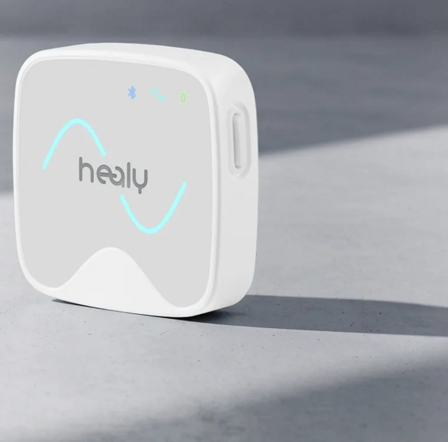

肉体
体をとりまく生体エネルギーフィールドを、最適な状態に整える。
健康、美容、メンタル、暮らす空間、そして目標の実現。Healyは、周波数でそのすべてに向き合える、ドイツ生まれの周波数テクノロジーです。sizcaから始めると、使いこなすためのサポートもついてきます。

「ヒーリーって何？」から、最新モデルHealy 3で新しくなったこと、価格まで。1ページにまとめました。
2019年にドイツで生まれたHealy World。その使命は、人間を構成するすべての要素を「最高の状態」に保つことです。
体をとりまく生体エネルギーフィールドを、最適な状態に整える。
感情とメンタルが、ブレずに安定している。
本来の目的や願望と、自分がまっすぐにそろっている。
豊かな人生を支える、仕事とお金の循環がある。
アプリでプログラムを選んで、周波数を流す。ひとつのデバイスで、人生のいろいろな場面に向き合えます。
顔や肌のためのプログラム。眠る前に流して、翌朝の鏡を楽しみに。
運動のときだけでなく、長時間の仕事や、「もうひと踏ん張り」が必要な日にも。
気持ちが沈んだ日に、フラットな自分へ戻るためのプログラム。
置くだけで半径1.5mの空間に周波数を届けるMagHealy。家族やペットと過ごす場所ごと整えます。
ユング心理学をベースにしたAIが、目標への無意識のブロックを分析し、望む未来に向けて波動を調整します。
チャクラごとのエネルギー状態を数値で見える化。いまの自分の状態が、言葉で分かります。
世界のすべては、エネルギーと振動でできている。Healyは表面的な対処ではなく、もっとも根本的な「情報フィールド」にアプローチします。
目に見える組織や臓器は、細胞、分子、原子・素粒子と、より細かな層が重なってできています。そのいちばん根っこにあるのが、エネルギーと周波数、そして情報フィールドです。
Healyがアプローチするのは、この根本の層です。
デバイスが、あなたの生体エネルギーフィールドを測定します。
ドイツのクラウドを経由して、AIがいま必要な周波数を特定します。
微弱電流（マイクロカレント）に乗せて、あなた専用の周波数を届けます。
※ Healyは日本では医療機器ではありません。効果を保証するものではなく、体の不調が気になるときは、医療機関へのご相談が第一です。

体と心、エネルギー、そして思い込み。自分を整えたり、書き換えたりする方法は、昔からたくさんあります。アロマやシンギングボウル、ジャーナリング、瞑想。どれも素晴らしい方法ですが、続けるには時間と手間がかかります。
私自身、長いあいだアロマやシンギングボウルで自分を整えてきました。だからこそ、Healyに出会ったときは驚きました。
香りや音で整えてきた周波数を、テクノロジーで、もっと深く、早く、簡単に。
私たちが本当に目指したいのは、整えることそのものではなく、魂のまま、持って生まれた才能と本質のままに生きる喜びのはず。こうしたテクノロジーが地球に生まれたいま、自分を整えることに、これまでのように時間をかけなくてもいい。テクノロジーと共存しながら、自分を生きる喜びに時間を使う時代が始まっています。
sizcaからHealyを始めた方には、3つの特典があります。
Healyのプログラムの解説や使い方、開発者の思想までまとめた解説コンテンツです。noteで販売しているこのコンテンツを、無料でご覧いただけます。
Healyの探求を重ねてきたからこそ、使い方で困ったことに、すぐ対応できます。
数秘術や言霊学など、見えない世界のことにも詳しいので、情報空間の話を、その観点からもシェアできます。
Healyが気になっている方、購入を考えている方へ。実際にHealyに触れて、確かめていただけるセッションです。

レゾナンスの結果の意味が腑に落ちて、自分で納得して選べるようになる。Healyのプログラムの解説や使い方、開発者の思想までまとめた、更新型の解説コンテンツです。